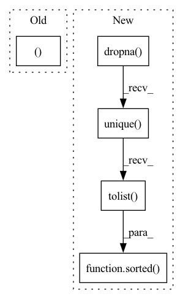

Pattern ID :5411
Before Change
"In order to force permutation feature importance, please use the Dataset"
" object.")
task_type, observed_classes, model_classes = infer_task_type_and_classes(model, dataset)
model_classes = model_classes if model_classes is not None else observed_classes
fi, _ = _calculate_feature_importance(model=model,
dataset=dataset,After Change
model_classes = infer_classes_from_model(model)
labels = get_all_labels(model, dataset)
observed_classes = sorted(labels.dropna().unique().tolist() )
if dataset.label_type:
task_type = dataset.label_type
elif model_classes:In pattern: SUPERPATTERN
Frequency: 3
Non-data size: 5
Instances Fragment ID: 19204949
Project Name: deepchecks/deepchecks
Commit Name: f984ff43f5ae9cb4021de5e4c4e8296a8a13bd99
Time: 2023-01-15
Author: matan@deepchecks.com
File Name: deepchecks/tabular/feature_importance.py
M Class Name: AnonimousClass
N Class Name: AnonimousClass
M Method Name: calculate_feature_importance(7)
N Method Name: calculate_feature_importance(7)
M Parent Class:
N Parent Class:
M File Name: deepchecks/tabular/feature_importance.py
N File Name: deepchecks/tabular/feature_importance.py
M Start Line: 95
M End Line: 96
N Start Line: 96
N End Line: 107
Before Change
task_type = TaskType.REGRESSION
if task_type in [TaskType.BINARY, TaskType.MULTICLASS]:
return task_type, sorted(observed_labels.dropna().unique()), model_classes
else:
return task_type, None, None
After Change
task_type = TaskType.REGRESSION
if task_type in (TaskType.BINARY, TaskType.MULTICLASS):
observed_classes = sorted(labels.dropna().unique().tolist() )
else:
observed_classes = None
return task_type, observed_classes, model_classes Fragment ID: 19204948
Project Name: deepchecks/deepchecks
Commit Name: f6ec20716bfe7a2ea40b4d2707cec4936156e967
Time: 2022-12-21
Author: matan@deepchecks.com
File Name: deepchecks/tabular/utils/task_inference.py
M Class Name: AnonimousClass
N Class Name: AnonimousClass
M Method Name: infer_task_type_and_classes(6)
N Method Name: infer_task_type_and_classes(4)
M Parent Class:
N Parent Class:
M File Name: deepchecks/tabular/utils/task_inference.py
N File Name: deepchecks/tabular/utils/task_inference.py
M Start Line: 52
M End Line: 97
N Start Line: 30
N End Line: 82
Before Change
def run_fi_calculation(model, dataset, permutation_kwargs=None, force_permutation=False):
task_type, observed_classes, model_classes = infer_task_type_and_classes(model, dataset)
model_classes = model_classes if model_classes is not None else observed_classes
return _calculate_feature_importance(model=model, dataset=dataset, model_classes=model_classes,
observed_classes=observed_classes, task_type=task_type,After Change
def run_fi_calculation(model, dataset, permutation_kwargs=None, force_permutation=False):
labels = get_all_labels(model, dataset)
observed_classes = sorted(labels.dropna().unique().tolist() )
model_classes = infer_classes_from_model(model)
if dataset and dataset.label_type:
task_type = dataset.label_type
elif model_classes: Fragment ID: 19204947
Project Name: deepchecks/deepchecks
Commit Name: f984ff43f5ae9cb4021de5e4c4e8296a8a13bd99
Time: 2023-01-15
Author: matan@deepchecks.com
File Name: tests/base/feature_importance_utils_test.py
M Class Name: AnonimousClass
N Class Name: AnonimousClass
M Method Name: run_fi_calculation(4)
N Method Name: run_fi_calculation(4)
M Parent Class:
N Parent Class:
M File Name: tests/base/feature_importance_utils_test.py
N File Name: tests/base/feature_importance_utils_test.py
M Start Line: 31
M End Line: 32
N Start Line: 32
N End Line: 41